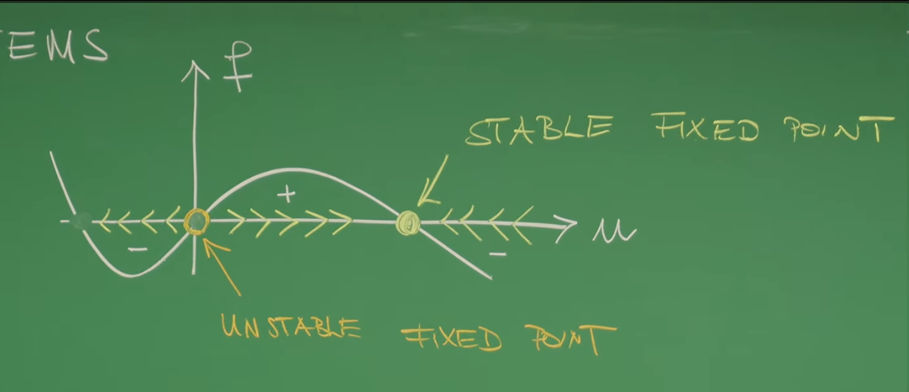
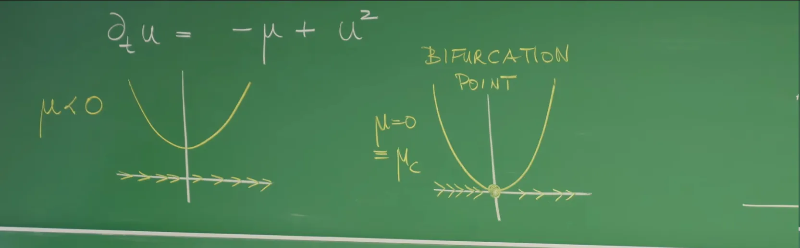
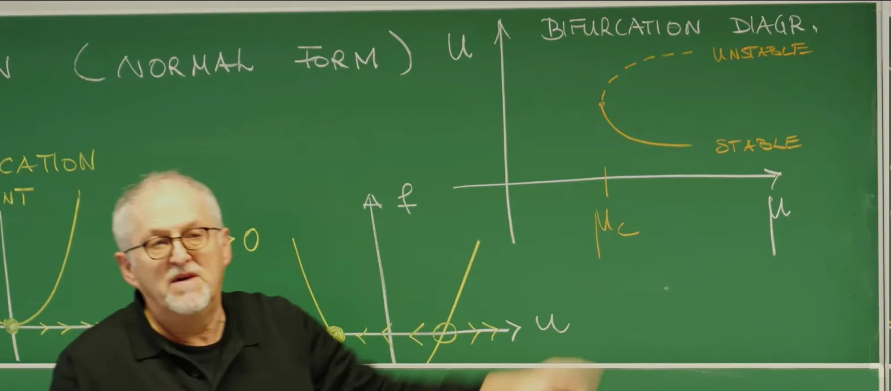
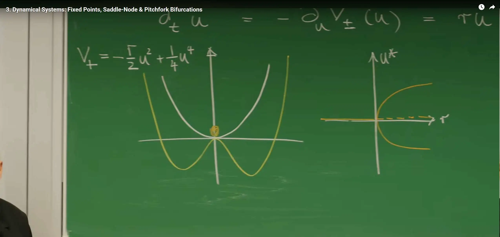
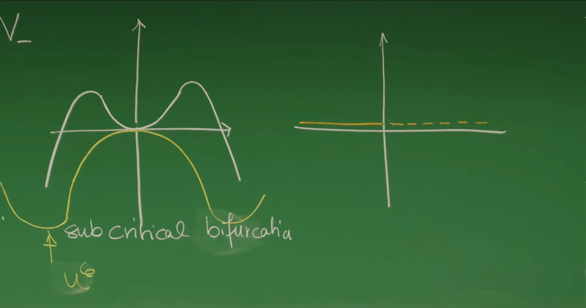

引言¶
上一讲探讨了动力系统如何为描述系统随时间演化提供一个普适框架。通过金茨堡-朗道理论 (Ginzburg-Landau theory) 的示例可以认识到，系统状态的演化能够被直观地理解为在一个“势能景观” (potential landscape) \(V(u)\) 中，沿着“最速下降”方向寻找能量最低点的过程。这种\(\frac{du}{dt} = -\frac{\partial V}{\partial u}\)的过阻尼运动视角，对于理解相变 (phase transition) 这类集体现象至关重要，系统最终的归宿（即势能的极小值点）代表了系统的平衡态。
这节课将深入动力系统的核心，聚焦于构成系统行为骨架的基本要素：不动点 (fixed points) \(u^*\)。不动点在数学上定义为演化函数 \(f(u, \mu)\) 的零点，即 \(f(u^*) = 0\)，此时系统的时间导数 \(\frac{du}{dt} = 0\)，系统状态不再随时间变化。这些点正是系统的平衡态 (equilibrium states) 或稳态 (steady states)。然而，并非所有平衡态都是等价的：有些像山谷（吸引子, attractor），扰动后仍能回复；有些则像山顶（排斥子, repeller），任何微小扰动都会使其远离。因此，分析不动点的稳定性 (stability) 是理解系统长期行为的关键。
当外部环境条件，即控制参数 (control parameter) \(\mu\) 发生缓慢变化时，系统的“势能景观”也会随之变形。在某个临界值，景观的形态可能发生质变，导致不动点的数量或其稳定性发生根本性的改变。这些临界事件被称为分岔 (bifurcations) 。分岔是理解现实世界中许多临界点、“引爆点” (tipping points) 和突变现象的数学精髓。本讲将从最简单的一维系统入手，重点分析两种最基本的分岔类型：鞍结分岔 (Saddle-Node Bifurcation) 和叉式分岔 (Pitchfork Bifurcation) 。在此基础上，下一讲将继续探讨由更高阶项和多参数控制的更复杂分岔，如尖点分岔 (Cusp Bifurcation)、滞后效应 (Hysteresis) 以及跨临界分岔 (Transcritical Bifurcation) 。
1. 一维动力系统与不动点¶
这节课将从最简单的一类动力系统——单分量系统 (one-component systems)——开始。这类系统是后续理解更复杂现象的基础。本节的目标是建立描述系统演化的数学语言，并找出系统所有可能的“归宿”，即不动点。
1.1 一维动力系统的数学描述¶
单分量系统意味着系统的宏观状态可以用一个随时间 \(t\) 变化的标量（单一变量）\(u(t)\) 来完全描述。其数学形式是一个一阶常微分方程 (ODE)：
这个方程是动力系统理论的基石，其中每个符号都有明确的物理意义：
\(u(t)\): 状态变量 (state variable) 。它描述系统的宏观状态。例如，它可以代表金茨堡-朗道理论中的序参量（如总磁化强度）、化学反应中某种物质的浓度，或生态系统中某个物种的种群密度。
\(\mu\): 控制参数 (control parameter) 。这是一个外部可调的参数，代表系统所处的环境条件，例如温度、压力、外加磁场或营养供给速率。通过改变 \(\mu\)，可以研究系统的响应。
\(f(u, \mu)\): 演化函数 (evolution function) ，在一维情况下也常被称为“流” (flow)。它定义了状态变量 \(u\) 随时间变化的“速度”或“倾向”。
物理意义：函数的符号决定了系统状态的演化方向。如果 \(f > 0\)，则 \(\frac{du}{dt} > 0\)， \(u\) 将随时间增加；如果 \(f < 0\)，则 \(\frac{du}{dt} < 0\)， \(u\) 将随时间减少。
与势能景观的联系：在许多物理系统（如上一讲的金茨堡-朗道理论）中，演化函数 \(f(u)\) 与一个势能景观 \(V(u)\) 相关联，其关系为 \(f(u) = -\frac{\partial V}{\partial u}\)。在这种情况下，\(\frac{du}{dt} = -\frac{\partial V}{\partial u}\) 描述了系统状态 \(u\) 总是朝着势能 \(V(u)\) 降低的方向（“下坡”）演化，直到达到势能的极小值点。
1.2 不动点：系统状态的“归宿”¶
一个系统最简单的长期行为，就是演化到一个平衡状态，并永久地停留在那里。这些特殊的平衡状态在数学上被称为不动点 (Fixed Points) ，通常用 \(u^*\) 表示。
根据定义，在不动点处，系统状态不再随时间变化，即其时间导数为零。因此，不动点 \(u^*\) 满足以下代数方程：
物理意义：不动点代表了系统的平衡态 (equilibrium states) 或 稳态 (steady states) 。一旦系统达到不动点 \(u^*\)，作用在 \(u\) 上的“力” \(f(u^*)\) 为零，如果没有外界扰动，它将永远保持在该状态。
图形化理解：从图形上看，不动点 \(u^*\) 是演化函数 \(f(u)\) 的曲线与 \(u\) 轴（即 \(f=0\) 这条线）的交点。
通过绘制 \(f(u)\) 随 \(u\) 变化的图像，可以直接读出不动点的位置，甚至直观地判断它们的稳定性。演化函数 \(f(u)\) 的正负号决定了状态变量 \(u\) 的“流向”：在 \(f>0\) 的区域，流向 \(u\) 增大的方向（\(\rightarrow\)）；在 \(f<0\) 的区域，流向 \(u\) 减小的方向（\(\leftarrow\)）。
如果一个不动点两侧的流都指向它（\(\rightarrow u^* \leftarrow\)），意味着 \(u^*\) 附近的任何状态最终都会汇聚到 \(u^*\)，这是一个稳定不动点（用实心点 \(\bullet\) 表示）。
如果一个不动点两侧的流都背离它（\(\leftarrow u^* \rightarrow\)），意味着 \(u^*\) 附近的任何状态都会远离 \(u^*\)，这是一个不稳定不动点（用空心点 \(\circ\) 表示）。
这种图形分析法非常直观，但它缺乏数学上的严谨性。为了精确定量地判断不动点的稳定性，需要引入下一节的工具。

2. 线性稳定性分析 (Linear Stability Analysis)¶
上一节找到了系统所有的平衡态（不动点），但这还不够。一个系统可能存在多个不动点，但它们在动力学上的“命运”截然不同。有些不动点像山谷的谷底，是稳定的（吸引子, attractor）；而另一些则像山峰的峰顶，是不稳定的（排斥子, repeller）。任何微小的现实扰动都会将系统从不稳定的峰顶推开，使其最终落入某个稳定的山谷。
因此，必须分析这些不动点在受到微小扰动时的行为。线性稳定性分析 (Linear Stability Analysis, LSA) 就是实现这一目标的标准数学工具。
2.1 扰动的演化方程¶
LSA 的核心思想是，在不动点 \(u^*\) 附近施加一个无穷小的扰动 \(\delta u(t)\)，然后考察这个扰动本身是随时间增长还是衰减。
1.定义扰动：假设系统的瞬时状态 \(u(t)\) 偏离了不动点 \(u^*\) 一个微小的量 \(\delta u(t)\)：
$$
u(t) = u^* + \delta u(t)
$$
2.建立扰动的动力学方程：考察这个小扰动 \(\delta u\) 自身如何随时间演化。对 \(\delta u(t)\) 求时间导数（注意 \(u^*\) 是常数，其导数为零）：
$$ \frac{d(\delta u)}{dt} = \frac{d(u - u^*)}{dt} = \frac{du}{dt} $$
根据系统原始的动力学方程 \(\frac{du}{dt} = f(u)\)，并将 \(u = u^* + \delta u\) 代入，得到：
$$ \frac{d(\delta u)}{dt} = f(u^* + \delta u) $$
3.泰勒展开与线性化：由于 \(\delta u\) 非常小，可以将复杂的非线性函数 \(f\) 在不动点 \(u^*\) 附近进行泰勒展开：
$$ \frac{d(\delta u)}{dt} = f(u^) + f'(u^) \delta u + \frac{1}{2}f''(u^*)(\delta u)^2 + \dots $$
其中 \(f'(u^*) = \left. \frac{\partial f}{\partial u} \right|_{u=u^*}\) 是函数 \(f\) 在不动点 \(u^*\) 处的一阶导数（即斜率）。
4.简化方程： 根据不动点的定义，我们有 \(f(u^*) = 0\)。
因为 \(\delta u\) 是无穷小量，\((\delta u)^2\) 及其更高次的项是更高阶的无穷小，可以忽略不计。
这个忽略高阶项的过程称为线性化 (linearization) 。它将一个复杂的非线性动力学问题，在不动点附近简化为了一个极其简单的线性常微分方程：
2.2 稳定性判据¶
上述线性化方程 \(\frac{d(\delta u)}{dt} = \lambda \delta u\)（其中 \(\lambda = f'(u^*)\) 是一个常数）的解是指数函数：
其中 \(\delta u(0)\) 是初始扰动。这个解的长期行为（\(t \to \infty\)）完全由指数项的符号，即 \(\lambda = f'(u^*)\) 的符号决定。这引出了稳定性的核心判据：
如果 \(f'(u^*) < 0\) (即 \(\lambda < 0\)) ：
指数为负，扰动 \(\delta u(t)\) 将随时间指数衰减趋于零。这意味着系统会自动回到不动点 \(u^*\)。因此，\(u^*\) 是一个稳定不动点 (stable fixed point) 或吸引子 (attractor) 。
如果 \(f'(u^*) > 0\) (即 \(\lambda > 0\)) ：
指数为正，扰动 \(\delta u(t)\) 将随时间指数增长，导致系统远离不动点 \(u^*\)。因此，\(u^*\) 是一个不稳定不动点 (unstable fixed point) 或排斥子 (repeller) 。
如果 \(f'(u^*) = 0\) (即 \(\lambda = 0\)) ：
线性稳定性分析失效。扰动的演化将由被忽略的更高阶非线性项（如 \((\delta u)^2\)）决定。这种情况非常特殊，它恰恰是系统可能发生质变的临界点，即分岔点 (bifurcation point) ，这正是后续课程要讨论的核心。
这个强大的分析方法，将一个复杂非线性函数 \(f(u)\) 在不动点附近的全部动力学行为，浓缩到了一个单一的数字——它在该点的导数 (斜率) \(f'(u^*)\) 上。这也完美印证了 1.2 节中的图形化分析：
在稳定不动点（\(\bullet\)）处，\(f(u)\) 曲线正在“下穿” \(u\) 轴，其斜率 \(f'(u^*)\) 必然为负。
在不稳定不动点（\(\circ\)）处，\(f(u)\) 曲线正在“上穿” \(u\) 轴，其斜率 \(f'(u^*)\) 必然为正。
至此，我们便同时拥有了直观的图形工具和严谨的数学工具来分析任何一维系统的平衡态及其稳定性。

3. 鞍结分岔：不动点的诞生与湮灭¶
在第 2 节中，我们学习了如何使用线性稳定性分析 \(f'(u^*)\) 的符号来判断不动点的稳定性。但一个关键问题是：当 \(f'(u^*) = 0\) 时会发生什么？此时线性稳定性分析失效，系统处于临界状态，任何微小的参数变化都可能导致系统动力学行为的质变。
这正是分岔 (Bifurcation) 发生的临界点。这节课将从最简单、最普遍的鞍结分岔开始，深入探讨这种“质变”是如何发生的。
3.1 什么是分岔？¶
分岔 (Bifurcation) ，其词源有“分叉”之意（如树枝或河流分叉），是动力系统理论中的一个核心概念。它描述的是一类特定的临界现象：当一个控制参数 \(\mu\) 缓慢变化并穿过某个临界值 \(\mu_c\) 时，系统的动力学结构发生质变的现象。
这里的“质变” (qualitative change) 是关键。它不是指不动点位置随参数发生的平滑移动（这是一种“量变”），而是指不动点的数量发生了改变（例如从0个变为2个），或者不动点的稳定性发生了根本逆转（例如一个稳定不动点突然变为不稳定）。发生这种质变的参数临界值 \(\mu_c\) 被称为分岔点 (bifurcation point) 。
从数学角度看，分岔的“魔力”发生在线性稳定性分析 (LSA) 失效的精确时刻。回顾第 2 节，LSA 依赖于泰勒展开的线性项 \(f'(u^*) \delta u\)。在分岔点 \(\mu_c\) 上，系统至少有一个不动点 \(u^*\) 恰好满足：
此时，\(\delta u\) 演化方程 \(\frac{d(\delta u)}{dt} = \lambda \delta u\) 中的线性“恢复力” \(\lambda\) 变为零。这意味着，之前被忽略的高阶非线性项（如 \((\delta u)^2, (\delta u)^3\) 等）不再可以被忽略，它们“接管”了系统的动力学，并成为决定系统命运（是演化到新状态还是保持原样）的主导因素。分岔理论的本质，就是研究这些非线性项如何决定系统在临界点附近的行为。
从物理世界到生物系统，分岔现象无处不在，它是系统发生“突变”的普遍机制：
1.力学中的屈曲 (Buckling) ：想象一根垂直放置的弹性直尺，其控制参数 \(\mu\) 是从上方向下施加的压力。
当 \(\mu < \mu_c\)（压力较小）时，系统只有一个稳定不动点 \(u=0\)（直尺保持竖直）。
当 \(\mu > \mu_c\)（压力超过临界值）时，竖直状态 \(u=0\) 变为不稳定（像山峰），同时“分岔”出两个新的稳定不动点 \(u^* \neq 0\)（直尺向左或向右弯曲）。这就是一个典型的分岔。
2.流体力学中的对流 (Convection) ：考虑一个从底部加热的薄层液体，控制参数 \(\mu\) 是液体顶层和底层的温差。
当 \(\mu < \mu_c\)（温差较小）时，热量通过热传导（静止）传递，系统处于 \(u=0\)（无宏观流动）的稳定状态。
当 \(\mu > \mu_c\)（温差足够大）时，这个静止状态变得不稳定，系统“分岔”出一个新的稳定状态：液体开始形成宏观的对流“滚筒”（\(u \neq 0\)），即瑞利-贝纳德对流 (Rayleigh-Bénard convection)。
3.生物学中的种群爆发 ：在某些生态模型中，控制参数 \(\mu\) 可能是营养物质的富集程度。当 \(\mu\) 超过某个临界值 \(\mu_c\) 时，一个原本稳定的低密度种群平衡点可能消失，导致系统状态跃迁到一个高密度的“种群爆发”状态。
这节课后续要讨论的鞍结分岔 (Saddle-Node) 和叉式分岔 (Pitchfork)，正是对这些纷繁复杂的突变现象背后最基本、最普适的数学原型的分类与研究。
3.2 鞍结分岔的常态形式¶
最简单、最常见的分岔类型是鞍结分岔 (Saddle-Node Bifurcation) 。它之所以重要，是因为它代表了不动点“诞生”和“湮灭”的最基本方式。
常态方程¶
它的常态形式 (normal form) ，即能够捕获此分岔现象的最简数学表达，为一个简单的二次方程：
这里，为了分析方便，已将分岔点平移到 \(\mu_c = 0\) 和 \(u^* = 0\) 处。这个看似简单的方程具有极强的普适性 (universality) 。无论一个具体物理系统（如流体、化学反应、生态模型）的演化函数 \(f(u, \mu)\) 多么复杂，只要它在分岔点附近可以通过泰勒展开，其主导动力学行为的项都可以被简化为此常态形式。
动力学分析¶
现在来详细分析这个方程的动力学行为如何依赖于参数 \(\mu\)：
-
寻找不动点：不动点 \(u^*\) 满足 \(f(u^*) = 0\)，即 \(-\mu + (u^*)^2 = 0\)，解得： $$ u^* = \pm\sqrt{\mu} $$
-
分析不动点的存在性 (随 \(\mu\) 的演化) ：
当 \(\mu < 0\) 时：\(\sqrt{\mu}\) 为虚数，方程没有实数解。此时， \(f(u) = -\mu + u^2\) 始终大于零（抛物线在 \(u\) 轴上方）。因此 \(\frac{du}{dt} > 0\)，系统中的状态 \(u\) 会一直向 \(+\infty\) 演化，系统没有不动点（没有平衡态）。
当 \(\mu = 0\) 时：\(\frac{du}{dt} = u^2\)。此时 \(u^* = 0\) 是唯一的不动点。这个点是鞍结分岔发生的临界点 \(\mu_c\)。
当 \(\mu > 0\) 时：\(\sqrt{\mu}\) 为实数，系统“凭空”诞生了两个不动点：
3.稳定性分析：使用第 2 节的线性稳定性分析 (LSA)。首先计算 \(f(u)\) 的导数：
对于 \(\mu > 0\) 的情况 ：
在 \(u_1^* = -\sqrt{\mu}\) 处：\(f'(u_1^*) = 2(-\sqrt{\mu}) = -2\sqrt{\mu} < 0\)。因此 \(u_1^*\) 是一个稳定不动点（吸引子）。
在 \(u_2^* = +\sqrt{\mu}\) 处：\(f'(u_2^*) = 2(+\sqrt{\mu}) = 2\sqrt{\mu} > 0\)。因此 \(u_2^*\) 是一个不稳定不动点（排斥子）。
对于 \(\mu = 0\) 的情况：
在 \(u^* = 0\) 处：\(f'(u^*) = 2(0) = 0\)。LSA 失效，证实了这正是一个分岔点。

左图 (\(\mu < 0\)) ：抛物线 \(f(u) = -\mu + u^2\) 完全位于 \(u\) 轴上方，\(f(u)\) 恒为正。流 (flow) 始终指向右侧 (\(\rightarrow\))，系统没有不动点。
右图 (\(\mu = 0\)) ：在分岔点 \(\mu_c = 0\)，抛物线 \(f(u) = u^2\) 恰好与 \(u\) 轴相切于 \(u=0\)。此时 \(f(u) \ge 0\)，流在 \(u=0\) 两侧都指向右侧 (\(\rightarrow\))。\(u=0\) 是一个“半稳定”不动点（从左侧汇聚，从右侧远离）。

此图 (\(\mu > 0\)) ：抛物线 \(f(u) = -\mu + u^2\) 与 \(u\) 轴交于两点。
在 \(u_1^* = -\sqrt{\mu}\) 处，流向为 \(\rightarrow \bullet \leftarrow\)，这是一个稳定不动点（实心点）。
在 \(u_2^* = +\sqrt{\mu}\) 处，流向为 \(\leftarrow \circ \rightarrow\)，这是一个不稳定不动点（空心点）。
总结一下，当参数 \(\mu\) 从负值“穿过”0 时，一个稳定不动点和一个不稳定不动点在 \(u=0\) 处碰撞并同时诞生（或者反过来看，当 \(\mu\) 从正值减小到 0 时，两者碰撞后湮灭）。这就是“鞍结” (Saddle-Node) 名字的来源：在更高维度看，它是一个鞍点 (saddle) 和一个结点 (node) 的碰撞。

3.3 势函数视角：在“能量景观”中滑行¶
这个分岔过程也可以通过势能景观 \(V(u)\) 的变形来直观理解。回顾关系式 \(\frac{du}{dt} = -\frac{\partial V}{\partial u}\)，对于常态形式 \(\frac{du}{dt} = -\mu + u^2\)，可以通过积分找到其对应的势函数 \(V(u; \mu)\)：
现在可以从“小球在景观中滚动”的角度来重新审视分岔：
当 \(\mu < 0\) 时：势函数 \(V(u)\) 是一条单调倾斜的曲线，没有局部极值点（没有山谷或山峰）。因此，系统没有不动点，小球会一直“滚落”到无穷远。
当 \(\mu = 0\) 时：势函数变为 \(V(u) = -u^3/3\)。在 \(u=0\) 处出现一个拐点，景观在该点变得平坦。
当 \(\mu > 0\) 时：势函数图像上出现了一个局部极小值（山谷）和一个局部极大值（山峰） 。
山谷 对应稳定不动点 \(u_1^* = -\sqrt{\mu}\) (因为 \(V'' > 0\))。
山峰 对应不稳定不动点 \(u_2^* = +\sqrt{\mu}\) (因为 \(V'' < 0\))。
分岔事件可以被看作是势能景观 \(V(u)\) 随着 \(\mu\) 的变化而变形，在 \(\mu=0\) 时，一个平坦的“斜坡”在 \(\mu>0\) 时突然隆起，同时创造出一个“山谷”和一个“山峰”的瞬间。
3.4 物理意义：“引爆点”与“共维数”¶
鞍结分岔在物理和生物系统中极为重要，因为它描述了临界转变 (critical transitions) 或 “引爆点” (tipping points) 。
引爆点：想象一个系统处于 \(\mu>0\) 时的稳定不动点 \(u_1^* = -\sqrt{\mu}\)（例如一个健康的生态系统）。现在让外部环境恶化（即 \(\mu\) 缓慢减小）。这个稳定状态会缓慢移动。当 \(\mu\) 减小到 0 时，这个稳定状态与不稳定状态 \(u_2^*\) 碰撞并湮灭。当 \(\mu\) 变为负值时，系统唯一的平衡态消失了，系统将被迫发生灾难性的跳跃，演化到另一个（可能离得很远的）状态（例如 \(\mu < 0\) 时的 \(-\infty\) 或 \(+\infty\)）。这个过程通常是突然且不可逆的，例如渔业资源的崩溃、冰盖的融化或物种的灭绝。
共维数 (Co-dimension) = 1：这是一个深刻的数学概念。它意味着鞍结分岔在单参数系统中是普遍的 (generic) 。你不需要特殊的对称性（像下一节的叉式分岔）或精细的调节；只要一个单参数动力学系统并改变其参数，它在某个临界点发生质变，最先遇到的分岔类型很可能就是鞍结分岔。这是因为它只需要满足两个临界条件 \(f(u^*, \mu_c)=0\) 和 \(\frac{\partial f}{\partial u}(u^*, \mu_c)=0\)，这对于两个未知数（\(u^*\) 和 \(\mu_c\)）通常存在解。
3.5 Python模拟：可视化鞍结分岔¶
为了更清晰地展示鞍结分岔，下面的 Python 代码将生成两个关键图形：
1.分岔图 (Bifurcation Diagram) ：展示不动点 \(u^*\) 的位置如何随控制参数 \(\mu\) 变化。
2.势能景观 (Potential Landscapes) ：展示 \(V(u)\) 的形态在 \(\mu < 0\), \(\mu = 0\) 和 \(\mu > 0\) 三种情况下的演变。
import numpy as np
import matplotlib.pyplot as plt
def plot_saddle_node_bifurcation():
"""
Generate and display the bifurcation diagram and potential landscape for a saddle-node bifurcation.
Uses 'dark_background' style.
"""
# --- Set dark background theme ---
plt.style.use('dark_background')
# --- Create figure and subplots ---
fig = plt.figure(figsize=(14, 6))
ax1 = fig.add_subplot(1, 2, 1)
ax2 = fig.add_subplot(1, 2, 2)
# --- Figure 1: Bifurcation Diagram (u* vs mu) ---
# du/dt = -mu + u^2 => u* = +/- sqrt(mu)
mu_vals = np.linspace(0, 2, 400)
u_stable = -np.sqrt(mu_vals)
u_unstable = np.sqrt(mu_vals)
# Plot stable branch (cyan)
ax1.plot(mu_vals, u_stable, 'c-', linewidth=2, label='Stable Fixed Point')
# Plot unstable branch (magenta)
ax1.plot(mu_vals, u_unstable, 'm--', linewidth=2, label='Unstable Fixed Point')
# Plot line for no fixed points when mu < 0 (gray)
ax1.plot(np.linspace(-2, 0, 100), np.zeros(100), 'gray', linewidth=0.5, alpha=0.7)
ax1.set_xlabel('Control Parameter $\\mu$')
ax1.set_ylabel('Fixed Points $u^*$')
ax1.set_title('Saddle-Node Bifurcation Diagram')
ax1.axhline(0, color='gray', linestyle=':', linewidth=1, alpha=0.7)
ax1.axvline(0, color='gray', linestyle=':', linewidth=1, alpha=0.7)
# Set legend text color to white
legend1 = ax1.legend()
for text in legend1.get_texts():
text.set_color('white')
ax1.grid(True, linestyle='--', alpha=0.3)
ax1.set_xlim(-2, 2)
ax1.set_ylim(-2, 2)
# --- Figure 2: Potential Landscape V(u) = mu*u - (1/3)*u^3 ---
u_range = np.linspace(-2.5, 2.5, 500)
mu_cases = [-1, 0, 1]
colors = ['#1f77b4', '#ff7f0e', '#2ca02c'] # Blue, Orange, Green
labels = [f'$\\mu = -1$ (No Fixed Points)', f'$\\mu = 0$ (Bifurcation Point)', f'$\\mu = 1$ (Two Fixed Points)']
for mu, color, label in zip(mu_cases, colors, labels):
V = mu * u_range - (1/3) * u_range**3
ax2.plot(u_range, V, color=color, linewidth=2.5, label=label)
# Mark fixed points
if mu > 0:
u_s = -np.sqrt(mu) # Stable point
u_u = np.sqrt(mu) # Unstable point
V_s = mu * u_s - (1/3) * u_s**3
V_u = mu * u_u - (1/3) * u_u**3
# Stable point (valley) - solid cyan
ax2.plot(u_s, V_s, 'o', color='cyan', markersize=8)
# Unstable point (peak) - hollow magenta
ax2.plot(u_u, V_u, 'o', markerfacecolor='none', markeredgecolor='magenta', markersize=8)
elif mu == 0:
V_0 = 0
# Inflection point - yellow
ax2.plot(0, V_0, 'o', color='yellow', markersize=8)
ax2.set_xlabel('State Variable $u$')
ax2.set_ylabel('Potential Energy $V(u)$')
ax2.set_title('Evolution of Potential Landscape with $\\mu$')
# Set legend text color to white
legend2 = ax2.legend()
for text in legend2.get_texts():
text.set_color('white')
ax2.grid(True, linestyle='--', alpha=0.3)
ax2.set_ylim(-1.5, 1.5)
ax2.axhline(0, color='gray', linestyle=':', linewidth=1, alpha=0.7)
plt.tight_layout()
plt.savefig('saddle_node_bifurcation.png', dpi=300, bbox_inches='tight')
plt.show()
# --- Run Simulation ---
if __name__ == "__main__":
plot_saddle_node_bifurcation()

左图 (分岔图) ：展示了不动点 \(u^*\) 的位置如何依赖于控制参数 \(\mu\)。当 \(\mu < 0\) 时，图上没有任何分支，表示系统没有不动点。在临界点 \(\mu = 0\) 处，一个不动点“诞生”；而当 \(\mu > 0\) 时，这个点分裂为两个分支：一个稳定不动点（实心青色线， \(u^* = -\sqrt{\mu}\)）和一个不稳定不动点（虚线品红线， \(u^* = +\sqrt{\mu}\)）。
右图 (势能景观演变) ：从物理上解释了为什么会发生这种变化。
\(\mu = -1\) 时（蓝色曲线）：势能 \(V(u)\) 是一个单调倾斜的斜坡，没有任何局部极值点（山谷或山峰），因此系统没有平衡态，会一直滑向 \(u \to \infty\)。
\(\mu = 0\) 时（橙色曲线）：在分岔点，势能景观在 \(u=0\) 处（黄色点）形成一个拐点，斜坡开始变得平坦。
\(\mu = 1\) 时（绿色曲线）：景观发生了质变，拐点“隆起”并分裂为一个局部极小值（山谷）在 \(u=-1\) 处（青色点），和一个局部极大值（山峰）在 \(u=+1\) 处（品红空心圆）。这分别对应新诞生的稳定不动点和不稳定不动点。
4. 叉式分岔：对称性的破缺与恢复¶
上一节课探讨了鞍结分岔（Saddle-Node Bifurcation），那是一种“凭空”产生或湮灭一对不动点的分岔，它不需要系统具备任何特殊条件，因此非常普遍。
这节将探讨一种截然不同的、需要系统具备特定对称性 (symmetry) 的分岔——叉式分岔 (Pitchfork Bifurcation) 。这种分岔在物理学中占据核心地位，因为它与“自发对称性破缺 (spontaneous symmetry breaking) ”这一深刻概念直接相关。它完美地描述了系统如何从一个对称的无序状态，转变为一个破坏了对称性的有序状态，例如磁铁在临界温度以下产生磁化，或是力学结构在临界压力下发生屈曲。
4.1 对称性在动力学中的体现¶
叉式分岔的核心前提是系统的演化函数 \(f(u)\) 具有反射对称性（或称为 \(Z_2\) 对称性）。在数学上，这意味着 \(f(u)\) 必须是一个奇函数 (odd function) ：
这个看似简单的数学约束具有深刻的动力学后果：
1.\(u=0\) 永远是不动点：因为 \(f(0) = -f(-0) = -f(0)\)，这迫使 \(f(0) = 0\) 必须成立。因此，只要对称性存在，\(u=0\) 永远是一个不动点（通常称为平凡不动点）。
2.不动点成对出现：如果 \(u^*\) 是一个不动点（即 \(f(u^*) = 0\)），那么 \(f(-u^*) = -f(u^*) = 0\) 也必然成立。这意味着 \(-u^*\) 也一定是一个不动点。非零的不动点总是成对、对称地出现。
这种对称性在物理系统中非常常见，例如磁铁中自旋向上 (\(+u\)) 和向下 (\(-u\)) 的对称性，或者力学直杆向左 (\(-u\)) 或向右 (\(+u\)) 屈曲的对称性。
相比之下，上一节课鞍结分岔的常态形式 \(\dot{u} = -\mu + u^2\) 包含 \(u^2\)（偶函数）项，它不具备这种对称性。因此，它的不动点 \(u^* = \pm\sqrt{\mu}\) 并不是对称地从 \(u=0\) 分岔出来的，而是在 \(u=0\) 处碰撞并湮灭。
叉式分岔的常态形式是满足奇函数约束的最简单的非线性方程。根据非线性项的符号，它分为两种类型：超临界和亚临界。
4.2 超临界叉式分岔¶
超临界叉式分岔 (Supercritical Pitchfork Bifurcation) 是描述连续相变的经典模型。其常态形式为：
这里使用 \(r\) 作为控制参数（以对应相变理论中的约化温度）。
\(ru\) 是线性项。当 \(r>0\) 时，它使 \(u=0\) 不稳定（指数增长）；当 \(r<0\) 时，它使 \(u=0\) 稳定（指数衰减）。
\(-u^3\) 是最简单的、满足奇函数对称性的非线性稳定项。它确保当 \(u\) 变得很大时，\(\frac{du}{dt}\) 会变为负值，从而防止系统状态发散到无穷大。
这对应于一个势函数 \(V(u) = -\frac{r}{2}u^2 + \frac{1}{4}u^4\)。\(f = -dV/du\)。这个势能在 \(r>0\) 时形如“墨西哥帽”或“酒瓶底”，是理解自发对称性破缺的关键。
动力学分析¶
1.寻找不动点：令 \(\frac{du}{dt} = 0\)，得到 \(u(r - u^2) = 0\)。
平凡解：\(u_0^* = 0\) (对所有 \(r\) 都存在)。 非平凡解：\(r - u^2 = 0 \implies u_{\pm}^* = \pm\sqrt{r}\) (仅在 \(r \ge 0\) 时存在实数解)。
2.稳定性分析 (LSA) ：演化函数的导数为 \(f'(u) = r - 3u^2\)。
对于平凡解 \(u_0^* = 0\) ：
-
\(f'(0) = r\)。
-
当 \(r < 0\) 时，\(f'(0) < 0\)， \(u_0^*\) 是稳定不动点。
-
当 \(r > 0\) 时，\(f'(0) > 0\)， \(u_0^*\) 变为不稳定不动点。
对于非平凡解 \(u_{\pm}^* = \pm\sqrt{r}\) (仅在 \(r > 0\) 时分析)：
-
\(f'(\pm\sqrt{r}) = r - 3(\pm\sqrt{r})^2 = r - 3r = -2r\)。
-
因为 \(r > 0\)，所以 \(f' = -2r < 0\)。这对新诞生的不动点总是稳定的。

物理意义：二级相变与自发对称性破缺¶
超临界叉式分岔是二级相变 (second-order phase transition) 的完美数学描述，这直接呼应了金茨堡-朗道理论。
\(u\) 扮演了序参量 (order parameter) 的角色（例如磁化强度）。
\(r\) 对应于约化温度，例如 \(r \propto (T_c - T)\)，其中 \(T_c\) 是临界温度。
1.当 \(r < 0\) 时 (高温, \(T > T_c\)) ：
系统唯一的稳定状态是 \(u^*=0\)（零磁化）。这个状态是完全对称的，对应于无序相（例如顺磁相）。势能 \(V(u)\) 此时是一个以 \(u=0\) 为最低点的单井。
2.当 \(r > 0\) 时 (低温, \(T < T_c\)) ：
原来的 \(u^*=0\) 状态变得不稳定（势能 \(V(u)\) 在 \(u=0\) 处变为山峰）。系统必须选择两个新的、对称的、稳定的状态 \(u^*=+\sqrt{r}\) 或 \(u^*=-\sqrt{r}\) 中的一个（对应势能的两个新山谷）。
这个过程被称为自发对称性破缺 (spontaneous symmetry breaking) 。尽管系统的物理规律（即 \(\frac{du}{dt}\) 方程）仍然是 \(u \to -u\) 对称的，但系统所处的基态（例如选择“向上”磁化 \(u^*=+\sqrt{r}\)）却破坏了这种对称性。
由于序参量 \(u^*\) 从 \(r=0\) 点开始连续地从0增长（\(u^* \propto \sqrt{r}\)），这种相变被称为连续相变或二级相变。
4.3 亚临界叉式分岔¶
亚临界叉式分岔 (Subcritical Pitchfork Bifurcation) 描述的是一种截然不同的、更具突变性的转变。其常态形式为：
\(ru\) 仍然是线性项。
\(+u^3\) 是一个非线性失稳项。它不再抑制 \(u\) 的增长，反而会加速 \(u\) 远离原点。
这对应于一个势函数 \(V(u) = -\frac{r}{2}u^2 - \frac{1}{4}u^4\)。这个势能在 \(r>0\) 时会朝 \(\pm\infty\) 发散，在物理上是不现实的。
“爆炸”与稳定化¶
单独分析 \(\frac{du}{dt} = ru + u^3\) 会发现：
1.不动点：\(u(r + u^2) = 0 \implies u_0^*=0\) 和 \(u_{\pm}^* = \pm\sqrt{-r}\) (仅在 \(r \le 0\) 时存在)。
2.稳定性：\(f'(u) = r + 3u^2\)。
\(u_0^*=0\)：\(f'(0)=r\)。在 \(r<0\) 时稳定，在 \(r>0\) 时不稳定。
\(u_{\pm}^* = \pm\sqrt{-r}\) (for \(r < 0\))：\(f'(\pm\sqrt{-r}) = r + 3(-r) = -2r\)。因为 \(r<0\)，所以 \(f' > 0\)，这对新分支是不稳定的。
物理问题：这个模型是灾难性的。
1.当 \(r\) 从负变正时，稳定的 \(u=0\) 态变为不稳定，但它“分岔”出的两个新分支（\(r<0\) 时）也是不稳定的。
2.当 \(r>0\) 时，\(u=0\) 不稳定，且 \(f(u)\) 会将 \(u\) 推向 \(\pm\infty\)，系统“爆炸”了。

物理现实（稳定化）：物理系统不会无限发散。这意味着，必须存在一个更高阶的稳定项（例如 \(-u^5\)）在 \(u\) 变得非常大时“接管”系统，防止其发散。一个更符合物理的、稳定化的亚临界模型是：
这对应于一个更复杂的势能 \(V(u) = -\frac{r}{2}u^2 - \frac{1}{4}u^4 + \frac{1}{6}u^6\)。
物理意义：一级相变与滞后¶
这个稳定化的亚临界模型能够描述一级相变 (first-order phase transition) ，其动力学行为要复杂得多，并表现出滞后 (hysteresis) 现象：
1.双稳态区域 ：在某个 \(r\) 的参数范围（例如 \(r < 0\) 的某段区间），系统会存在三个稳定不动点：\(u=0\) 和一对新的对称不动点 \(u^* \neq 0\)（由 \(-u^5\) 项产生）。
2.不连续跳跃：
当 \(r\) 从 \(r \ll 0\) 缓慢增加时，系统会一直保持在 \(u=0\) 的稳定态。即使 \(r\) 增加到 0 以上（\(u=0\) 在稳定化模型中仍可保持局部稳定），系统也会“卡”在这个状态。直到 \(r\) 达到某个正的临界值 \(r_c > 0\)，\(u=0\) 态与不稳定的分支碰撞（发生鞍结分岔）而湮灭，系统会突然跳跃到一个 \(u^* \neq 0\) 的稳定态。
当 \(r\) 从 \(r > 0\) 缓慢减少时，系统会保持在 \(u^* \neq 0\) 的状态。即使 \(r\) 减小到 0 以下，系统也会“卡”在这个状态，直到 \(r\) 达到某个负的临界值 \(r_s < 0\)， \(u^* \neq 0\) 的稳定态湮灭，系统突然跳回 \(u=0\) 的状态。
3.滞后回线：系统“跳上去”的 \(r\) 值 (\(r_c\)) 与“跳回来”的 \(r\) 值 (\(r_s\)) 不同。系统的状态取决于它的历史路径，这便是滞后。这正是一级相变（如水结冰和冰融化）的特征：结冰点（0°C）和过冷水突然结冰的温度是不同的。
4.4 Python模拟：可视化叉式分岔¶
下面的代码实践将分别可视化超临界和亚临界（稳定化形式）叉式分岔的分岔图及其对应的势能景观。
import numpy as np
import matplotlib.pyplot as plt
def plot_pitchfork_bifurcations():
"""
Generates and displays plots for supercritical and subcritical
pitchfork bifurcations using a dark background.
"""
# --- Use dark background style ---
plt.style.use('dark_background')
# --- Create figure and axes ---
fig, axes = plt.subplots(2, 2, figsize=(14, 12))
# --- 1. Supercritical Pitchfork Bifurcation ---
ax1, ax2 = axes[0, 0], axes[0, 1]
r_vals_super = np.linspace(-2, 2, 500)
# --- ax1: Supercritical Bifurcation Diagram ---
# u* = 0 (Trivial branch)
# Stable for r < 0 (cyan)
ax1.plot(r_vals_super[r_vals_super < 0], np.zeros_like(r_vals_super[r_vals_super < 0]), 'c-', linewidth=2.5, label='Stable')
# Unstable for r > 0 (magenta)
ax1.plot(r_vals_super[r_vals_super >= 0], np.zeros_like(r_vals_super[r_vals_super >= 0]), 'm--', linewidth=2.5, label='Unstable')
# u* = +/- sqrt(r) (Non-trivial branches)
r_positive = r_vals_super[r_vals_super >= 0]
u_plus = np.sqrt(r_positive)
u_minus = -np.sqrt(r_positive)
ax1.plot(r_positive, u_plus, 'c-', linewidth=2.5)
ax1.plot(r_positive, u_minus, 'c-', linewidth=2.5)
ax1.set_title('Supercritical Pitchfork Diagram')
ax1.set_xlabel('Control Parameter $r$')
ax1.set_ylabel('Fixed Point $u^*$')
ax1.grid(True, linestyle='--', alpha=0.3)
legend1 = ax1.legend()
for text in legend1.get_texts(): text.set_color('white')
ax1.axhline(0, color='gray', linestyle=':', linewidth=1, alpha=0.5)
ax1.axvline(0, color='gray', linestyle=':', linewidth=1, alpha=0.5)
ax1.set_ylim(-2.5, 2.5)
ax1.set_xlim(-2, 2)
# --- ax2: Supercritical Potential V(u) = -r/2 * u^2 + 1/4 * u^4 ---
u_range = np.linspace(-2.5, 2.5, 500)
r_cases = [(-1, '#1f77b4', 'r = -1 (Single Well)'),
(0, '#ff7f0e', 'r = 0 (Flat Bottom)'),
(2, '#2ca02c', 'r = 2 (Double Well)')]
for r_val, color, label in r_cases:
V = -0.5 * r_val * u_range**2 + 0.25 * u_range**4
ax2.plot(u_range, V, label=label, color=color, linewidth=2.5)
ax2.set_title('Supercritical Potential Landscapes')
ax2.set_xlabel('State Variable $u$')
ax2.set_ylabel('Potential $V(u)$')
ax2.grid(True, linestyle='--', alpha=0.3)
legend2 = ax2.legend()
for text in legend2.get_texts(): text.set_color('white')
ax2.set_ylim(-1.5, 2)
ax2.axhline(0, color='gray', linestyle=':', linewidth=1, alpha=0.5)
# --- 2. Subcritical Pitchfork Bifurcation (stabilized) ---
ax3, ax4 = axes[1, 0], axes[1, 1]
# --- ax3: Subcritical Bifurcation Diagram ---
# f(u,r) = ru + u^3 - u^5 = 0
# Trivial branch: u = 0
# Stable for r < 0 (cyan), Unstable for r > 0 (magenta)
ax3.plot(r_vals_super[r_vals_super < 0], np.zeros_like(r_vals_super[r_vals_super < 0]), 'c-', linewidth=2.5, label='Stable')
ax3.plot(r_vals_super[r_vals_super >= 0], np.zeros_like(r_vals_super[r_vals_super >= 0]), 'm--', linewidth=2.5, label='Unstable')
# Non-trivial branches: u^4 - u^2 - r = 0 => u^2 = (1 +/- sqrt(1+4r))/2
# Outer stable branch: u^2 = (1 + sqrt(1+4r))/2 (exists for r > -0.25)
r_outer = np.linspace(-0.25, 1, 400)
u_outer = np.sqrt((1 + np.sqrt(1 + 4 * r_outer)) / 2)
ax3.plot(r_outer, u_outer, 'c-', linewidth=2.5)
ax3.plot(r_outer, -u_outer, 'c-', linewidth=2.5)
# Inner unstable branch: u^2 = (1 - sqrt(1+4r))/2 (exists for -0.25 < r < 0)
r_inner = np.linspace(-0.25, 0, 100, endpoint=False)
u_inner = np.sqrt((1 - np.sqrt(1 + 4 * r_inner)) / 2)
ax3.plot(r_inner, u_inner, 'm--', linewidth=2.5)
ax3.plot(r_inner, -u_inner, 'm--', linewidth=2.5)
ax3.set_title('Subcritical Pitchfork Diagram (Stabilized)')
ax3.set_xlabel('Control Parameter $r$')
ax3.set_ylabel('Fixed Point $u^*$')
ax3.grid(True, linestyle='--', alpha=0.3)
legend3 = ax3.legend()
for text in legend3.get_texts(): text.set_color('white')
ax3.axhline(0, color='gray', linestyle=':', linewidth=1, alpha=0.5)
ax3.axvline(0, color='gray', linestyle=':', linewidth=1, alpha=0.5)
ax3.axvline(-0.25, color='yellow', linestyle=':', linewidth=1, alpha=0.5, label='Saddle-Node $r_s$')
ax3.set_ylim(-2.5, 2.5)
ax3.set_xlim(-1, 1)
# --- ax4: Subcritical Potential V(u) = -r/2*u^2 - 1/4*u^4 + 1/6*u^6 ---
u_range_sub = np.linspace(-2, 2, 500)
# r_s = -0.25 is where the non-trivial branch is born
r_cases_sub = [(-0.5, '#1f77b4', 'r = -0.5 (Bistable)'),
(-0.25, 'yellow', 'r = -0.25 (Saddle-Node)'),
(0.1, '#2ca02c', 'r = 0.1 (u=0 Unstable)')]
for r_val, color, label in r_cases_sub:
V_sub = -0.5 * r_val * u_range_sub**2 - 0.25 * u_range_sub**4 + (1/6) * u_range_sub**6
ax4.plot(u_range_sub, V_sub, label=label, color=color, linewidth=2.5)
ax4.set_title('Subcritical Potential Landscapes (Stabilized)')
ax4.set_xlabel('State Variable $u$')
ax4.set_ylabel('Potential $V(u)$')
ax4.grid(True, linestyle='--', alpha=0.3)
legend4 = ax4.legend()
for text in legend4.get_texts(): text.set_color('white')
ax4.set_ylim(-0.1, 0.1)
ax4.axhline(0, color='gray', linestyle=':', linewidth=1, alpha=0.5)
plt.tight_layout()
plt.show()
# --- Run the simulation ---
if __name__ == "__main__":
plot_pitchfork_bifurcations()

左上图 (超临界分岔图) ：展示了一个连续的相变。当 \(r<0\) 时，系统唯一的稳定态是 \(u=0\)（青色实线）。在 \(r=0\) 的临界点，这个 \(u=0\) 的解变为不稳定（品红虚线），同时连续地“分岔”出两个新的、对称的稳定解（上下的青色实线），系统会平滑地过渡到其中一个新状态。
右上图 (超临界势能) ：在物理上解释了左上图的现象。势能景观 \(V(u)\) 从 \(r<0\) 时的单井（蓝色曲线，最低点在 \(u=0\)），演变为 \(r=0\) 时的平底井（橙色曲线），最终在 \(r>0\) 时变为双井或“墨西哥帽”势（绿色曲线）。\(u=0\) 处从势能谷底（稳定）隆起为势能山峰（不稳定），迫使系统“滑落”到两个新出现的、对称的谷底（\(u \neq 0\)）中。
左下图 (亚临界分岔图) ：展示了一个不连续的、具有滞后特征的相变。分岔图呈现出一个“S”形和一条直线。在 \(r\) 轴的某个区域（\(r_s < r < 0\)）存在双稳态：\(u=0\) 是稳定的（青色实线），同时两个 \(u \neq 0\) 的外部分支也是稳定的（青色实线）。因此，当 \(r\) 从负向正增加时，系统会停留在 \(u=0\) 直到 \(r=0\) 才跳跃；而当 \(r\) 从正向负减少时，系统会停留在 \(u \neq 0\) 的分支上，直到 \(r=r_s=-0.25\) 处（黄色虚线，鞍结分岔点）才跳回 \(u=0\)，形成一个滞后回线。
右下图 (亚临界势能) ：展示了左下图的双稳态是如何产生的。在 \(r=-0.5\) 时（蓝色曲线），势能景观呈现三个山谷（三个稳定不动点），中间的山谷（\(u=0\)）比两侧的更深。在 \(r=-0.25\) 时（黄色曲线），两侧的山谷与中间的山脊（不稳定不动点）碰撞并湮灭（鞍结分岔）。在 \(r>0\) 时（绿色曲线），\(u=0\) 处变为一个山峰（不稳定），系统只能存在于两侧的山谷中。
总结¶
这节课探讨了一维动力系统的核心概念，为理解更复杂的自组织现象奠定了坚实的数学基础。课程从演化函数 \(f(u, \mu)\) 出发，将不动点 (\(f(u^*)=0\)) 识别为系统的平衡态。核心工具线性稳定性分析 (LSA) 通过计算导数 \(f'(u^*)\) 的符号，为判断不动点稳定性提供了严谨的数学方法。
当控制参数 \(\mu\) 改变时，系统会经历分岔 (bifurcation) ——其动力学行为发生质的改变。课程详细分析了两种最基本的分岔类型：
1.鞍结分岔 (Saddle-Node) ：它不需要系统具备对称性，是系统中平衡态产生和消失的最普遍机制，与现实世界中的“引爆点” (tipping points) 密切相关。
2.叉式分岔 (Pitchfork) ：它的发生以系统具有 \(u \to -u\) 反射对称性为前提。它完美地描述了物理学中自发对称性破缺 (spontaneous symmetry breaking) 的过程。
下表总结了这两种主要分岔类型的关键特征：
| 分岔类型 (Bifurcation Type) | 常态形式 (Normal Form) | 分岔点 (Bifurcation Point) | 不动点行为 (Fixed Point Behavior) | 对称性 (Symmetry) | 物理关联 (Physical Analogy) |
|---|---|---|---|---|---|
| 鞍结分岔 (Saddle-Node) | \(\dot{u} = -\mu + u^2\) | \(\mu = 0\) | \(\mu < 0\) 时0个; \(\mu > 0\) 时2个 (1稳, 1不稳) |
无需对称性 | 状态的创生/湮灭；引爆点 |
| 超临界叉式 (Supercritical) | \(\dot{u} = ru - u^3\) | \(r = 0\) | \(r < 0\) 时1个稳定; \(r > 0\) 时3个 (2稳, 1不稳) |
需要 \(u \to -u\) 对称性 | 二级相变 (2nd-order) |
| 亚临界叉式 (Subcritical) | \(\dot{u} = ru + u^3 - u^5\) (需稳定化) |
\(r = 0\) | 存在双稳态与滞后 | 需要 \(u \to -u\) 对称性 | 一级相变 (1st-order) |

这张PPT总结了叉式分岔与物理模型的联系，特别是金茨堡-朗道理论 (Ginzburg-Landau model)。
核心方程 ：\(\partial_t x = -\partial_x V_{\pm}(x) = rx \mp x^3\)。这明确了动力学是势能 \(V(x)\) 驱动的过阻尼运动 (over-damped motion)。
超临界 (Supercritical) ：对应 \(V_+(x) = -\frac{r}{2}x^2 + \frac{1}{4}x^4\)。
势能 \(V_+\) ：当 \(r>0\) 时，势能从单井（虚线）变为双井（实线），在 \(u=0\) 处从极小值变为极大值。
分岔图 \(x^*\) vs. \(r\) ：稳定的 \(u=0\) 解在 \(r=0\) 处变为不稳定（虚线），并连续地分岔出两个新的稳定解 \(x^* = \pm\sqrt{r}\)（实线）。这完美对应了二级相变。
亚临界 (Subcritical) ：对应 \(V_-(x) = -\frac{r}{2}x^2 - \frac{1}{4}x^4\)。
势能 \(V_-\) ：当 \(r<0\) 时，势能从 \(u=0\) 处的极小值（虚线）变为 \(r>0\) 时的极大值（实线），且势能向 \(\pm\infty\) 发散。
分岔图 \(x^*\) vs. \(r\) ：稳定的 \(u=0\) 解（实线）在 \(r=0\) 处变为不稳定（虚线），而新分岔出的两个解 \(x^* = \pm\sqrt{-r}\)（虚线）在 \(r<0\) 时是不稳定的。

简单的亚临界模型 \(\dot{u} = ru + u^3\) 在物理上是不完整的，因为它会导致系统“爆炸”。这张PPT展示了如何解决这个问题，即引入更高阶的稳定项，这正是一级相变 (First order phase transitions) 的势能形式。
稳定化的势能：\(V(x) = -\frac{r}{2}x^2 - \frac{u}{4}x^4 + \frac{v}{6}x^6\)。这里的 \(+x^6\) 项（其中 \(v>0\)）确保了当 \(x\) 很大时，势能 \(V(x)\) 最终会上升，从而束缚住系统状态。
势能演化：当 \(r\) 从正值（如 \(r_{c,1}\)）减小到负值（红色曲线）时，这个势能景观的演化过程。
当 \(r\) 较大时（\(r > r_{c,3}=0\)），系统只有 \(x=0\) 一个稳定态（绿色曲线）。
当 \(r\) 减小到 0 并变为负值时，势能景观在 \(x=0\) 之外逐渐形成了两个新的、对称的“山谷”（蓝色、黑色曲线）。
此时，系统出现了三个稳定不动点（\(x=0\) 和两个 \(x \neq 0\) 的点），形成了双稳态 (bistability) 区域。
当 \(r\) 进一步减小到 \(r_{c,2}\) 时，三个山谷等深。当 \(r\) 变得更负时（红色曲线），两侧的山谷变为全局最低能量态。
物理联系：这种三井结构（\(V(x)\)）是亚临界分岔图（\(u^*\) vs. \(r\)）中“S”形分岔曲线的来源，它正是导致不连续跳跃和滞后 (hysteresis) 现象的根本原因，完美对应了一级相变。
到目前为止，这节课的分析都集中在只有一个控制参数（\(\mu\) 或 \(r\)）的最简单分岔上。下一讲将自然地延续并扩展这些概念，探讨由多个参数控制的更复杂的分岔，以及这些分岔在现实模型中的应用：
尖点分岔 (Cusp Bifurcation) ：这是对亚临界分岔的直接扩展。它将研究当引入第二个控制参数（例如一个外场 \(h\)，使势能 \(V(x)\) 不再对称）时，亚临界分岔的“S”形曲线会如何演变为一个“尖点”曲面。
滞后 (Hysteresis) ：将深入探讨由尖点分岔和亚临界分岔导致的滞后回线，这是系统状态依赖于其历史路径的典型非线性现象。
跨临界分岔 (Transcritical Bifurcation) ：将介绍另一种常见的分岔类型，其中两个不动点碰撞并“交换”它们的稳定性，这在生物模型（如传染病模型 (Infection Model) ）中至关重要。